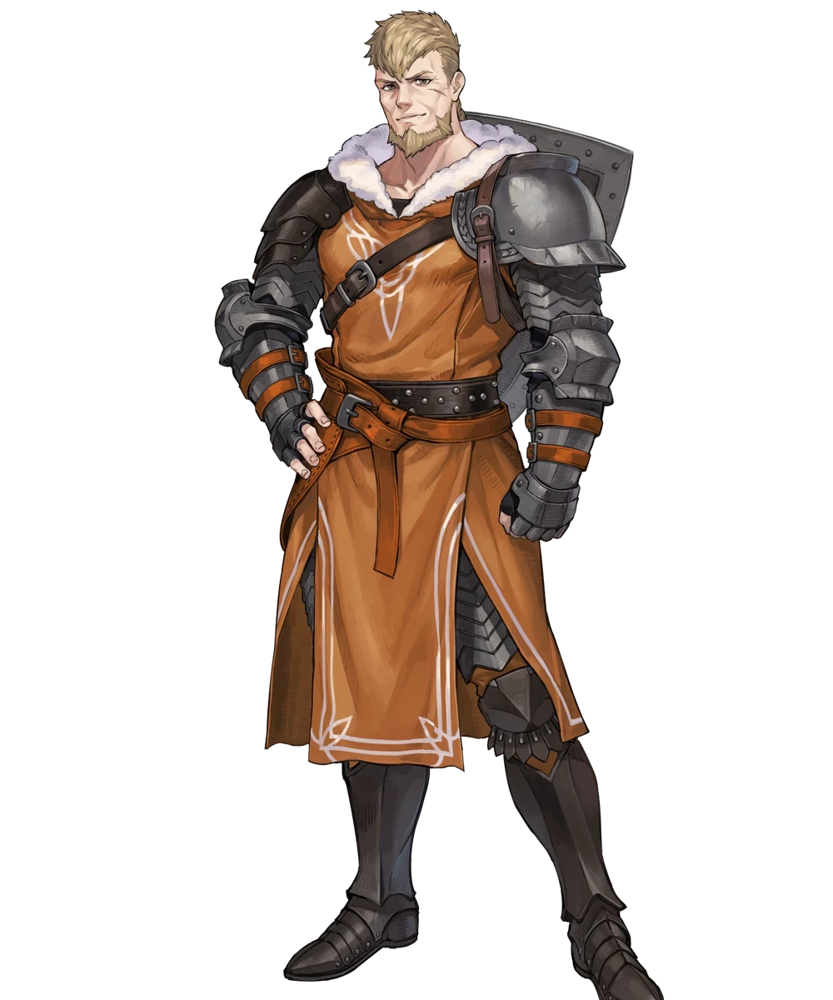

Biography Jeralt Eisner is the legendary former captain of the Knights of Seiros and the father of Byleth, the game's protagonist. Revered throughout Fódlan as one of its greatest knights, Jeralt left the Church of Seiros years before the events of Fire Emblem: Three Houses, choosing instead to lead a mercenary company while raising Byleth. His reputation as the "Blade Breaker" is well known across the continent, earning him the respect of allies and adversaries alike. After returning to Garreg Mach Monastery, Jeralt once again becomes involved in the affairs of the Church while continuing to guide Byleth through the challenges ahead.
Personality Jeralt is calm, dependable, and highly experienced, carrying himself with the confidence of a seasoned warrior. Although he can appear reserved, he deeply cares for Byleth and consistently places their safety above all else. His years as both a knight and mercenary have made him pragmatic and cautious, often encouraging others to question appearances rather than blindly accept what they are told. Beneath his stoic exterior, Jeralt possesses a dry sense of humor and a strong sense of responsibility toward those under his care.
Role in the Blue Lions Route Jeralt serves as one of Byleth's earliest mentors and an important guiding figure throughout the opening chapters of Fire Emblem: Three Houses. His extensive knowledge of Fódlan and the Church of Seiros provides valuable context for many of the game's events, while his relationship with Byleth influences the protagonist's development. As the story progresses, Jeralt's legacy continues to shape both Byleth's journey and the choices they make, reinforcing themes of family, trust, and perseverance.
Relationships Jeralt shares a close father-child relationship with Byleth, serving as both a parent and mentor. He is respected by the members of the Knights of Seiros, particularly Archbishop Rhea and his former comrades, who recognize his legendary accomplishments on the battlefield. His interactions with the students and faculty of Garreg Mach demonstrate both his experience as a leader and his genuine concern for the next generation of warriors.